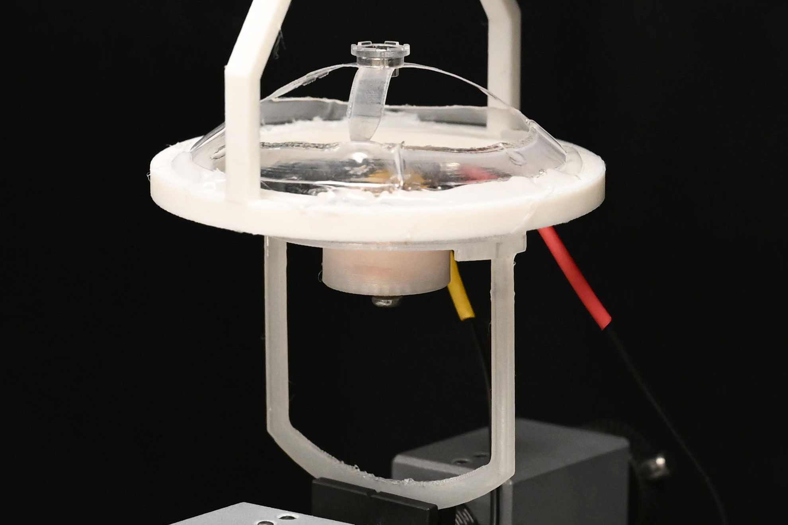

Single-unit experimental prototypeBEAMbot
Bistable mechanics meets electromagnetic actuation.
How can mechanical bistability and electromagnetic switching work together in modular robots? I’m developing compliant units and studying how structural geometry, magnetic placement, and drive signals shape their behavior.
- Laser-cut PETG mechanisms
- Force–gap and electrical characterization
- Multi-unit prototypes and drive-electronics development
Inside the research
The approach. Connect mechanical testing with coil characterization and switching experiments, then use that evidence to guide the next hardware iteration.
What comes next. Flexible-coil integration, compact local electronics, and richer unit-level motion are directions under investigation. Autonomous assembly and decentralized robot behavior remain longer-term questions.
Shown: wired prototypes used for mechanical and actuation experiments.